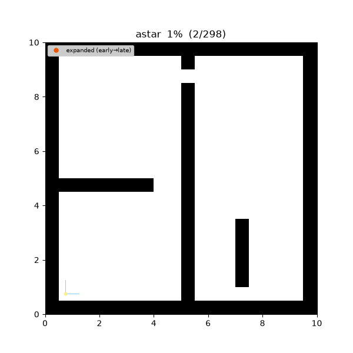

navigation study Overview¶
A study of robot navigation planning algorithms — the same abstract design is independently implemented twice, in C++20 and Python 3.10+, with step-by-step visualization built on a language-neutral trace format and a (map × algorithm) matrix benchmark.
At a Glance¶
Three algorithms solving the same maze (maze01, a 20×20 occupancy grid).
Color encodes time order — expanded nodes go from yellow to dark brown, the sampling tree is in light blue tones, and the final path runs from purple (start) to red (goal).
| A* (informed search) | RRT* (asymptotically optimal) | Fast-RRT (2021) |
|---|---|---|
 |
 |
 |
| 108 nodes expanded | 8,000 samples + rewire | Fast-Sampling + shortcut |
Core Design¶
- Common abstractions — every planner inherits from the
GlobalPlanner/LocalPlanner/MultiAgentPlannerabstract classes and requires only capability interfaces (DiscreteSpace,SamplingSpace,ObstacleQuery), never concrete map types. Adding a new map type leaves the algorithm code untouched (OCP). - Language mirroring — C++ and Python implement the same design, the same parameters, and the same trace events, each in its own idiomatic style. The trace / param / map formats are language-neutral contracts under the repository's
spec/directory — the single source of truth. - Trace-based visualization — algorithms emit their search progress as JSON Lines events, and there is one visualization tool (
tools/viz/replay.py), not one per language. Traces from the C++ demos replay through the same tool. - Benchmark matrix —
tools/bench/run_matrix.pyruns (scenario × algorithm) combinations and collects success, runtime, path cost, and expanded/samples counts.
Implementation Status¶
| Category | Implemented | Planned |
|---|---|---|
| global_planning | BFS · Dijkstra · A* · RRT · RRT* · Fast-RRT | RRT-Connect, Informed RRT* |
| local_planning | — | DWA, Pure Pursuit, VFH, MPC |
| multi_agent | — | Prioritized A, Joint-space A, CBS |
All six implemented algorithms satisfy C++ / Python parity — on the same map with the same parameters, the discrete algorithms produce identical results, and the sampling algorithms produce statistically equivalent, seed-based results. See Benchmarks for the detailed numbers.
Quick Start¶
# Python (>= 3.10)
cd python && pip install -e ".[dev,viz]" && cd ..
pytest python/tests # 79 tests
# C++ (C++20, CMake >= 3.20)
cmake -S cpp -B cpp/build -DCMAKE_BUILD_TYPE=Release
cmake --build cpp/build -j
ctest --test-dir cpp/build # 45 tests
# run a demo (identical CLI in both languages) + visualize
python python/demos/demo_astar.py \
--map maps/grid/maze01.yaml --scenario maps/scenarios/maze01_s1.yaml \
--params configs/global_planning/astar.yaml --trace out/astar.jsonl
python tools/viz/replay.py out/astar.jsonl --gif out/astar.gif
Documentation Layout¶
| Page | Contents |
|---|---|
| Algorithms | Per-algorithm details — theory, pseudocode, properties (completeness, optimality, complexity), parameters, demo GIF/PNG, original-paper footnotes |
| Architecture | Repository layout, dependency directions, capability model, trace contract, parameter abstraction |
| Benchmarks | Measured results of the (map × algorithm) matrix + C++/Python comparison |
| References | Full bibliography |